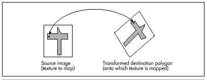

Figure 56.2 Mapping a texture onto an untransformed polygon.
| Previous | Table of Contents | Next |
So, here’s where Winnie the Pooh lives: in a space station orbiting Saturn. No, really; I have it straight from my daughter, and an eight-year-old wouldn’t make up something that important, would she? One day she wondered aloud, “Where is the Hundred Acre Wood, exactly?” and before I could give one of those boring parental responses about how it was imaginary—but A.A. Milne probably imagined it to be somewhere near London—my daughter announced that the Hundred Acre Wood was in a space station orbiting Saturn, and there you have it.
As it turns out, that’s a very good location for the Hundred Acre Wood, leading to many exciting adventures for Pooh and Piglet. Consider the time they went down to the Jupiter gravity level (we’re talking centrifugal force here; the station is spinning, of course) and nearly turned into pancakes of the Pooh and Piglet varieties, respectively. Or the time they drifted out into the free-fall area at the core and had to be rescued by humans with wings strapped on (a tip of the hat to Robert Heinlein here). Or the time they were caught up by the current in the river through the Wood and drifted for weeks around the circumference of the station, meeting many cultures and finding many adventures along the way. (Yes, Farmer’s Riverworld; no one said the stories you tell your children need to be purely original, just interesting.)
(If you think Pooh and Piglet in a space station is a tad peculiar, then I won’t even mention Karla, the woman who invented agriculture, medicine, sanitation, reading and writing, peace, and just about everything else while travelling the length of the Americas with her mountain lion during the last Ice Age; or the Mars Cats and their trip in suspended animation to the Lesser Magellenic Cloud and beyond; or most assuredly Little Whale, the baby Universe Whale that is naughty enough to eat inhabited universes. But I digress.)
Anyway, I bring up Pooh and the space station because the time has come to discuss fast texture mapping. Texture mapping is the process of mapping an image (in our case, a bitmap) onto the surface of a polygon that’s been transformed in the process of 3-D drawing. Up to this point, each polygon we’ve drawn in X-Sharp has been a single, solid color. Over the last couple of chapters we added the ability to shade polygons according to lighting, but each polygon was still a single color. Thus, in order to produce any sort of intricate design, a great many tiny polygons would have to be drawn. That would be very slow, so we need another approach. One such approach is texture mapping; that is, mapping the bitmap containing the desired image onto the pixels contained within the transformed polygon. Done properly, this should make it possible to change X-Sharp’s output from a bland collection of monocolor facets to a lively, detailed, and much more realistic scene.
“What sort of scene?” you may well ask. This is where Pooh and the space station came in. When I sat down to think of a sample texture-mapping application, it occurred to me that the shaded ball demo we added to X-Sharp recently looked at least a bit like a spinning, spherical space station, and that the single unshaded, yellow polygon looked somewhat like a window in the space station, and it might be a nice example if someone were standing in the window....
The rest is history.
The key to our texture-mapping approach will be to quickly determine what pixel value to draw for each pixel in the transformed destination polygon. These polygon pixel values will be determined by mapping each destination pixel in the transformed polygon back to the image bitmap, via a reverse transformation, and seeing what color resides at the corresponding location in the image bitmap, as shown in Figure 56.1. It might seem more intuitive to map pixels the other way, from the image bitmap to the transformed polygon, but in fact it’s crucial that the mapping proceed backward from the destination to avoid gaps in the final image. With the approach of finding the right value for each destination pixel in turn, via a backward mapping, there’s no way we can miss any destination pixels. On the other hand, with the forward-mapping method, some destination pixels may be skipped or double-drawn, because this is not necessarily a one-to-one or one-to-many mapping. Although we’re not going to take advantage of it now, mapping back to the source makes it possible to average several neighboring image pixels together to calculate the value for each destination pixel; that is, to antialias the image. This can greatly improve texture quality, although it is slower.

Figure 56.1 Using reverse transformation to find the source pixel color.
To understand how we’re going to map textures, consider Figure 56.2, which maps a bitmapped image directly onto an untransformed polygon. Here, we simply map the origin of the polygon’s untransformed coordinate system somewhere within the image, then map the vertices to the corresponding image pixels. (For simplicity, I’ll assume in this discussion that the polygon’s coordinate system is in units of pixels, but scaling images to polygons is eminently doable. This will become clearer when we look at mapping images onto transformed polygons, next.) Mapping the image to the polygon is then a simple matter of stepping one scan line at a time in both the image and the polygon, each time advancing the X coordinates of the edges according to the slopes of the lines, just as is normally done when filling a polygon. Since the polygon is untransformed, the stepping is identical in both the image and the polygon, and the pixel mapping is one-to-one, so the appropriate part of each scan line of the image can simply be block copied to the destination.
Figure 56.2 Mapping a texture onto an untransformed polygon.
Now, matters get more complicated. What if the destination polygon is rotated in two dimensions? We no longer have a neat direct mapping from image scan lines to destination polygon scan lines. We still want to draw across each destination scan line, but the proper source pixels for each destination scan line may now track across the source bitmap at an angle, as shown in Figure 56.3. What can we do?
The solution is remarkably simple. We’ll just map each transformed vertex to the corresponding vertex in the bitmap; this is easy, because the vertices are at the same indices in the original and transformed vertex lists. Each time we select a new edge to scan for the destination polygon, we’ll select the corresponding edge in the source bitmap, as well. Then—and this is crucial—each time we step a destination edge one scan line, we’ll step the corresponding source image edge an equivalent amount.
| Previous | Table of Contents | Next |